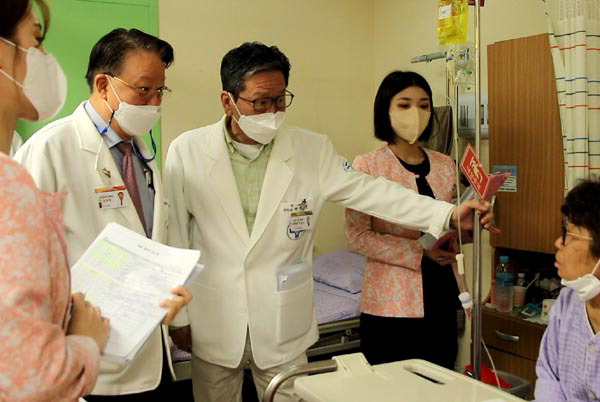
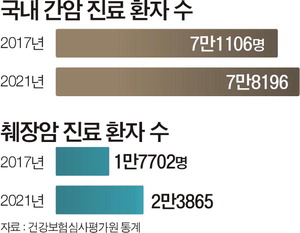
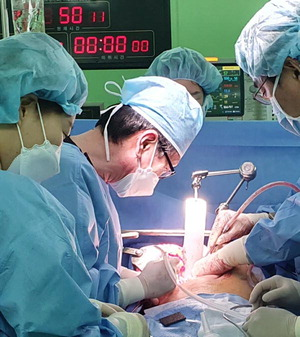
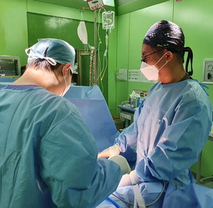

'하이테크 서저리팀' 꾸려 다학제 협진...고난도 '휘플수술' 척척
- L20220628.22015007088i1.jpg [File Size:67.5KB]
- 20220628.22015007088i2 (1).jpg [File Size:25.7KB]
- 20220628.22015007088i3.jpg [File Size:52.8KB]
- 20220628.22015007088i4.jpg [File Size:42.6KB]
- 서울아산병원 출신 잇단 영입
- 췌장암 치료 ‘휘플’ 이달 15건
- 간담췌장암 수술 ‘2년간 310건’
- 신장 등 장기이식도 적극 시행
- 박광민 센터장 간이식 베테랑
- 중환자실 간호사 수련에 심혈
- 임상 케이스 축적·노하우 공유
개원 12년 만에 부산 울산 경남지역 간담췌장 관련 암 수술 전문병원으로 자리잡은 부산 온종합병원이 새로운 도전에 나섰다. 서울아산병원 외과 교수 출신의 전문의들로 ‘하이테크 서저리(high tech surgery)팀’을 꾸리며 고난도 수술에 도전하는 것이다. 즉 ‘어떤 환자의 수술도 포기하지 않는다’는 뜻이다. 하이테크 서저리팀은 앞으로 고난도 수술의 임상 케이스들을 모아 관련 학회에 발표하고 다른 의사들과 공유함으로써 ‘수술 100% 가능성’을 목표로 하고 있다.

온종합병원의 김동헌(왼쪽 두 번째) 병원장과 박광민(왼쪽 세 번째) 의무원장을 비롯한 의료진이
원내 병실을 돌아다니며 진찰하는 ‘대회진’ 과정에서 입원 환자와 얘기를 나누고 있다.
■ 다학제 협진 체제
온종합병원(병원장 김동헌·전 부산대병원 외과 주임교수)은 지난달 서울아산병원 외과에서 전공의와 펠로우 과정을 거친 양산부산대병원 외과 문기명 교수와 부산백병원 외과 박요한 교수를 잇따라 영입했다고 27일 밝혔다. 그에 앞서 서울아산병원 간담췌외과 임상의를 지낸 이상엽 박사도 초빙했다. 이들 의사는 27년간 서울아산병원 외과 교수를 지내다가 2020년 2월부터 온종합병원으로 옮긴 박광민 센터장의 권유로 하이테크 서저리팀에 합류했다.
온종합병원 외과의 하이테크 서저리팀(팀장 박광민 의무원장)은 이름 그대로 고난도 수술을 위한 조직이다. 다른 병원에서 시도하기를 망설이는 중증 간담췌장 관련 암뿐만 아니라 유방암·갑상선암 환자들을 대상으로 적극 수술하는 것이다. 또한 이 팀은 고난도 복강경 수술과 함께 경동맥 혈전 제거술처럼 중재적 시술의 도움이 필요한 혈관 수술도 시행한다.

하이테크 서저리팀은 이를 위해 온종합병원 내 혈액종양내과 방사선종양학과 중재적 내시경 내과 중재적 영상의학과 등의 전문의들과 다학제 협진을 치료 원칙으로 하고 있다. 매주 화요일 오후 각 진료과 전문의들이 모여서 미리 선정된 환자에 대한 다학제 협진을 갖는다. 또 다학제 진료의 효과를 극대화하기 위해 기존 수술실을 ‘하이테크 서저리 수술실’로 개조한다.
■ 간담췌장 암환자 수술 310건
온종합병원의 통계 자료를 보면 2020년 3월부터 올해 5월까지 이 병원 통합소화기센터의 간담췌장 관련 수술은 모두 1400건에 이른다. 이들 중 암환자 수술이 310건을 차지한다. 특히 박광민 센터장은 올해 들어서만 35건의 간담췌암(간암 8건 담도암 15건 췌장암 12건)을 수술한 것으로 나타났다. 문기명 박요한 교수가 합류한 5월에는 간담췌장 관련수술이 100건을 넘는다.
서울아산병원에서 수련한 대학병원 교수 출신들로 보강된 하이테크 서저리팀은 ‘외과수술의 꽃’으로 불리는 ‘휘플 수술’을 이달 들어서만 15건이나 시행했다. 이런 사실이 알려지자 하이테크 서저리팀의 수술을 참관하고 싶다는 미국 의학전문대학원 입학 예정자들의 요청이 쇄도하고 있다고 한다.
하이테크 서저리팀은 앞으로 간 신장 췌장 등의 장기이식 수술도 적극 시행하기로 했다. 서울아산병원 간담췌외과 주임교수를 역임한 박광민 센터장은 서울아산병원에서 이미 700례의 간이식 수술을 시행한 베테랑이다. 문기명 교수도 양산부산대병원 장기이식센터장으로 재임하며 간이식 수술에 적극 참여해왔다. 세계 생체간이식학회 회원인 박요한 교수 또한 서울아산병원 한림대병원 부산백병원 등에서 간이식 수술에 적극 참여해 온 중견 외과의사다.
■ 본격 장기이식 수술 대비
온종합병원은 장기이식 수술을 뒷받침하기 위해 지난 4월 병리과를 신설한 상태다. 세포·동결조직 병리와 특수염색 등의 다양한 병리 검사를 자체적으로 시행해 환자들에게 보다 질 높은 의료서비스를 제공하는 것이다. 온종합병원은 또 지난 5월 보건복지부 산하 ‘국립 장기이식관리센터’로부터 장기이식센터 지정을 받았다. 이와 관련, 부산대병원 장기이식센터에서 20여 년간 근무한 장기이식 코디네이터를 영입해 본격적인 장기이식 수술에 대비하고 있다.
온종합병원과 하이테크 서저리팀은 장기이식센터의 성공적인 정착을 위해 연내 50억 원을 투입해 장기이식 및 혈관 수술에 필요한 장비와 고난도 복강경 수술 등의 관련 장비들을 세팅하는 작업을 진행 중이다. 그와 아울러 외과 의사들을 뒷받침해줄 PA간호사, 중환자실 간호사 등의 의료인력 교육·수련에도 심혈을 기울이고 있다. 특히 중환자실 전담의사 자격을 보유하고 있는 문기명 교수는 암 및 장기이식 수술 이후 중환자실에서의 환자 집중치료가 수술 성패를 좌우한다고 보고, 박광민 센터장과 함께 병동 및 중환자실 소속 간호사 30여 명에 대한 교육에 집중하고 있다.
■ “서울아산병원과 진료 협력”
일명 ‘외과 서울아산병원팀’으로 불리는 온종합병원 하이테크 서저리팀은 병원 내 수간호사·주임간호사 등 중견 간호사 8명과 함께 간호사 교육용 교재로 ‘간담췌외과 간호학개론’을 조만간 출간한다. 이 교재에는 간 담도 췌장 등의 기저질환에 대한 최신 정보와 함께 수술 전·후 간호, 병동 간호 등에 대한 사항들이 세세히 적혀 있어 간호사들의 실무 수행에 큰 도움을 줄 것으로 기대된다.
박광민 하이테크 서저리팀장은 “온종합병원과 서울아산병원은 이미 진료협약을 체결해 간담췌장 관련 암 환자의 상호 회송시스템으로 수술과 항암치료 효과를 극대화하는데 주력하고 있다”면서 “앞으로 서울아산병원의 젊은 의료진이 온종합병원으로 파견을 와서 수술 등에 참여할 수 있는 전공의 파견교육 프로그램을 도입하는 것도 논의하고 있다”고 말했다.
박 센터장은 또 “고난도 수술 환자의 케이스들을 축적하고 이를 학회에도 보고할 예정이다. 이를 통해 ‘외과 수술 100% 가능성’을 여는데 온종합병원 하이테크 서저리팀이 작은 디딤돌 역할을 하고 싶다”고 포부를 밝혔다.
  수술을 집도하고 있는 ‘하이테크 서저리 팀’의 문기명(오른쪽) 교수.
박광민 팀장 겸 의무원장이 집도한 모습.
◇ 휘플 수술
췌장암을 치료하기 위해 췌장 일부와 주위 장기를 외과적으로 제거하는 방법을 말한다. 췌장암이 머리 부분에 있을 때 췌장의 머리와 샘창자(십이지장), 소장 일부, 위의 하부, 총담관과 담낭을 절제하는 수술이다.
구시영 선임기자 ksyoung@kookje.co.kr
출처: 국제신문(http://www.kookje.co.kr/news2011/asp/newsbody.asp?code=0700&key=20220628.22015007088)